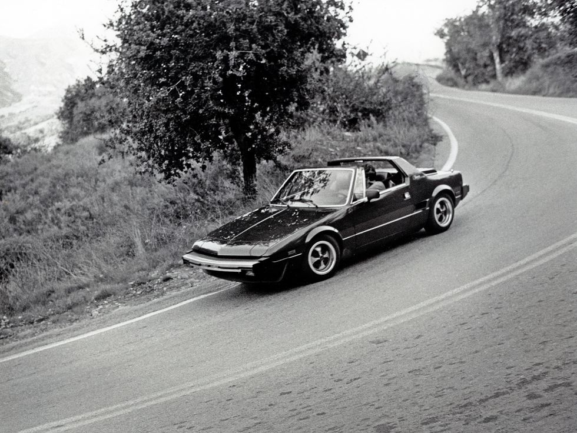

Fiat X1/9
The poor man's Ferrari

"The sports car for the masses, in it's natural habitat."
About the Fiat X1/9
Launch
Specifications
Unique Features
Gallery


The poor man's Ferrari
"The sports car for the masses, in it's natural habitat."